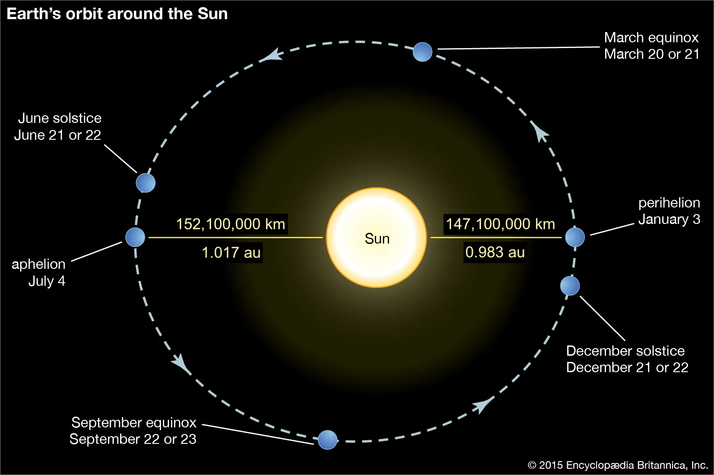

Code
Time taken by light to reach Earth from the Sun = 499.0 s = 8.317 min = 8 min 19 s Let’s start with some simple observations of the night sky…
“Look at the night sky, what do we see?”
Here in Scotland, the answer to this questions is likely ‘clouds’, but if you are curious to know what is beyond those clouds, you can check out Stellarium (you can download it or you can use the web version).
All that glitters is not (only) stars!

Looking at the night sky we may be able to see planets, meteors, galaxies, satellites, comets, star clusters and many stars!

A star is an astronomical spheroid body:
Having this definition you should be able to answer the following questions:
A star is not a static object. During its life it will evolve, changing its internal structure and chemical composition as it ‘burns its fuel’ and changing its mass and size.
The death of a star eventually occurs when one of the conditions that define a star is no longer valid, i.e. when the star is no longer self-gravitating, or when it stops radiating having exhausted its nuclear fuel.
We will talk more about the evolution of stars in the following lectures. Now let’s go back to what we can observe having a look at the night sky and let’s see what we can tell from observations of stars.


Let’s check the properties of two stars on Stellarium. What can you notice after a first look at these stars in Figure 1.3? You may notice that they have different colours (one looks white, the other one looks white-blue). The boxes contain some information about these stars, and you may recognise many of these fields in the blue boxes from positional astronomy. We will find out what the properties in the red boxes mean during this course.

How do we find the distance to the Sun?
Easy! - Just define The Astronomical Unit (a.u.) as the average distance between the Earth and the Sun!
Ok, but how big is an au? In 1976 the International Astronomical Union (IAU) adopted a standard definition whose value has been updated with increasing precision during the years. At the current date, the astronomical unit has the following value.
1 a.u. = 149,597,870,700 m
Can you now work out how long it takes for the sunlight to reach Earth?
Note: 1 a.u. is an average distance, because the distance between the Earth and the Sun varies during the year.

import math
AU = 149597870 # km
aphD = 152100000 # km
perD = 147100000 # km
AU_avg = (aphD+perD)/(2*AU) # Average distance, gives AU, check: print(f"{AU_avg}")
print(f"Distance Earth-Sun at aphelion (most distant) = {aphD:1.3e} km = {aphD/AU:1.4} au")
print(f"Distance Earth-Sun at perihelion (closest) = {perD:1.3e} km = {perD/AU:1.3} au")
print(f"Average distance Earth-Sun = {AU:1.3e} km = 1 au")Distance Earth-Sun at aphelion (most distant) = 1.521e+08 km = 1.017 au
Distance Earth-Sun at perihelion (closest) = 1.471e+08 km = 0.983 au
Average distance Earth-Sun = 1.496e+08 km = 1 au| Planet | Distance from Sun (a.u.) |
|---|---|
| Mercury | 0.39 |
| Venus | 0.72 |
| Earth | 1 |
| Mars | 1.52 |
| Jupiter | 5.20 |
| Saturn | 9.54 |
| Uranus | 19.2 |
| Neptune | 30.06 |
We started with the easy example of answering how distant is the Sun, but what about other stars? One way to determine the distance to nearest stars is to use the parallax method.
If you look at the position of a closer object against a further background, you will notice that the image of the near object will shift in the background as you move (see Figure 1.6). This effect is called parallax and you can experience it even when you close one eye at the time looking at an object against a background.

Analogously, in a background of distant stars, a closer star will appear to move against them as the Earth orbits the Sun. So how do we use this to determine the distance to a start? We use trigonometry.
The angle formed between the lines of sight of a star from two positions of the observer is twice the parallax angle. Figure 1.7 shows the parallax as the angle between the lines of sight of the observer on Earth and from the Sun (the middle point between the position of Earth six months apart).
The number of stars that can be observed from Earth is limited and nowadays direct observations of the distance using the parallax method are done by satellites orbiting the Sun in sync with Earth. Hipparcos gathered data on more than one million stars, and its successor Gaia has already observed 2 billion stars!
\[ \mathrm{1 arcsecond} = \dfrac{1}{3600} \deg = \dfrac{1}{206,265} \mathrm{radians}. \]
You can show these conversions by recalling that \[ 1\ \mathrm{rad} = 57.3\deg = (57.3\times 60\times 60)\ \mathrm{as}=206,265\ \mathrm{as}. \]
\[ \begin{aligned} 1\ \mathrm{parsec} &= \dfrac{1 \mathrm{au}}{\mathrm{arcsecond\ in\ radians}} = 206,265\mathrm{au}= \dfrac{648000}{\pi} \mathrm{au}\\ &\approx 3.086\times 10^{16}\mathrm{m}. \end{aligned} \]
A parallax of 1 arcsecond corresponds to a distance to the star of 1 parsec (3.26 light-years).
Using trigonometry, the distance \(d\) to the star, in astronomical units, is given by:
\[ d =\dfrac{1 \mathrm{au}}{\tan p}\simeq \dfrac{1}{p} \mathrm{au} \] where \(p\) is the parallax, and for this approximation we used \(p\) measured in radians. Converting the parallax \(p\) to \(p''\), from radians to arcseconds, we obtain the distance in parsec: \[ d \simeq\dfrac{206,265 \mathrm{au}}{p''}= \dfrac{1}{p''} \mathrm{pc} \]
The further a star is, the smaller the parallax angle.
The nearest star (Proxima Centauri) has a parallax of 0.7681 arcseconds. This is very tiny, but still, we are able to measure it! To give you an idea of how small this is:
The parallax method is covered in other courses, so this is just a taster, but now knowing the parallax of Proxima Centauri (or another star), we can find the distance to that.
import math
import numpy as np
def arcsec_to_rad(p):
rad = p/206265
return rad
p = 0.7681 # as
d_pc = 1/p # pc
p_rad = arcsec_to_rad(p)
d_au = 1/p_rad # au
d_km = d_au*AU # km
print(f"p = {p} as")
print(f"d = 1/p pc = 1/{p} pc = {d_pc:1.1e} pc")
print(f"d = 1/p pc = 206265/p au = 206265/{p} au = {d_au:1.1e} au")
print(f"d = {d_au:1.1e} au * 149597870 km = {d_km:1.1e} km")
print(f"The distance from Proxima Centauri is = {d_pc:1.1e} pc = {d_au:1.1e} au = {d_km:1.1e} km")p = 0.7681 as
d = 1/p pc = 1/0.7681 pc = 1.3e+00 pc
d = 1/p pc = 206265/p au = 206265/0.7681 au = 2.7e+05 au
d = 2.7e+05 au * 149597870 km = 4.0e+13 km
The distance from Proxima Centauri is = 1.3e+00 pc = 2.7e+05 au = 4.0e+13 kmAn unknown star has a parallax of 379.21 mas. Your messy lecturer tried to calculate the distance to the star but she must have made some mistakes because something looks wrong. Can you tell what?
# This is the version with mistakes
import math
p = 379.21/10000 # as
d_pc = 206265/p # pc
d_au = 1/p # au
AU = 149597870 # km
d_km = d_au*AU # km
print(f"The distance to the star is = {d_pc:1.1e} pc = {d_au:1.1e} au = {d_km:1.1e} km? Something does not look right... find the mistakes!")The distance to the star is = 5.4e+06 pc = 2.6e+01 au = 3.9e+09 km? Something does not look right… find the mistakes!
Below is the solution to the question. Something was clearly wrong with the orders of magnitudes of the values obtained in the wrong solution:
# The correct version
import math
p = 379.21/1000 # as <- the units conversion was wrong
d_pc = 1/p # pc <- This formula for the distance in pc was swapped with the one below for the distance in au
d_au = 206265/p # au
AU = 149597870 # km
d_km = d_au*AU # km
print(f"The distance to the star is = {d_pc:1.1e} pc = {d_au:1.1e} au = {d_km:1.1e} km")The distance to the star is = 2.6e+00 pc = 5.4e+05 au = 8.1e+13 km The parallax was also originally proposed as a way to determine the distance to the Sun by the Scottish astronomer James Gregory, in 1663, using the transit of Venus. Gregory is seldom given any credits for this idea and usually all the credits goes to Edmund Halley for some reason (can anyone find out why?).
The parallax was also originally proposed as a way to determine the distance to the Sun by the Scottish astronomer James Gregory, in 1663, using the transit of Venus. Gregory is seldom given any credits for this idea and usually all the credits goes to Edmund Halley for some reason (can anyone find out why?).
In 1677, at the age of 20, Halley travelled to St Helena to map the Southern Skies and observed a transit of Mercury on November 7th. Like Gregory, he suggested that the transit of a planet like Venus could be used as a method to measure the distance to the Sun, using parallax.
Here is the translation of Halley’s publication about this idea.

According to ‘Halley’s method’, two observers (A and B in the figure above) have to be positioned at a great distance from each other, but both located on the side of Earth facing the Sun at the time of the transit. Each observer would precisely measure the times that Venus appear to be in different positions (contact points) relative to the Sun. The observers would see different chords of the planet’s trajectory across the disk of the sun due to parallax. Venus forms two similar triangles with the Earth and the Sun at their opposite edges. Since the triangles are similar, the projected distance on the Sun can be found by comparing it to a known baseline on Earth. Once the angle shift is measured, the distances to Venus and then to the Sun can be determined using trigonometry.
Modern techniques use radar echo ranging to measure distances in the Solar System very precisely.

We can deduce the width of the sun if we know its angular diameter \(\alpha\) and the distance \(D\).
For small angles,
\[ \alpha \approx \frac{2R_\odot}{D}. \]
This formula uses radians for \(\alpha\)
Since the Sun’s angular diameter is \(\alpha\approx 0.5^\circ \approx 32 \ \mathrm{arcmin} \approx 9.3\times 10^{-3} \mathrm{rad}\), and we know its distance (from Earth) \(D = 1 \mathrm{au} = 149,597,870 \ \mathrm{km}\), we can now calculate the size of the Sun using the equation above.
import math
AU = 149597870 # km
ang_diameter_arcm = 32 # angular diameter of Sun is about 32 minutes of arc
ang_diameter = ang_diameter_arcm/60 * math.pi/180
# ang_diameter = ang_diameter_rad
diameter = AU * ang_diameter
print(f"1 au = {AU:1.3e} km")
print(f"angular diameter of the sun = {ang_diameter:.3e} radians")
print(f"Diameter of Sun = {diameter:.0f} km")
print(f"Radius of Sun = {diameter/2:.0f} km")1 au = 1.496e+08 km
angular diameter of the sun = 9.308e-03 radians
Diameter of Sun = 1392520 km
Radius of Sun = 696260 kmThe accepted radius is \(6.957\times 10^5\) km.
Here is a video showing a comparison between star sizes: https://www.youtube.com/watch?v=HEheh1BH34Q
Here is a list of some selected examples of star radii, compared to the Sun. Some stars, such as Sirius B, are much smaller than the Sun. (Figure 1.10 below shows an artistic impression of Sirius A and Sirius B.)
The typical range of star radii is roughly \(10^{-3}R_\odot < R < 10^3 R_\odot\).
| Name | Radius |
|---|---|
| Sirius B | 0.008 \(R_\odot\) |
| Sirius A | 1.71 \(R_\odot\) |
| Arcturus | 12 \(R_\odot\) |
| Aldebaran | 22 \(R_\odot\) |
| Rigel | 78.9 \(R_\odot\) |
| Mira | 210 \(R_\odot\) |
| Betelgeuse | 320 \(R_\odot\) |
You can estimate angular diameters using your hand! Extend your arm, place the hand at a right angle and follow the intstructions of Figure 1.12 to estimate different angles. This may not be useful to determine the size of objects that are very far and appear too small, such as stars, but can be useful to measure the angular distance between two stars.

Let’s have a look at some orders of magnitude (this is a good resource if you want to visualise them: https://scaleofuniverse.com/en-gb).
If we try to answer this question based on our observations, we have to keep in mind that the apparent brightness of a light source will vary depending on its distance from the observer. The brightenss we observe is therefore not an intrinsic property of the stars, as it depends on the distance between the observer and the stars.
This is the reason why we need to differentiate between the apparent brightness of a star and its luminosity.
The apparent brightness, \(F\), also referred to as the radiant flux or power flux, is the total amount of energy emitted by a star, per unit time, crossing an unit area (units [\(\mathrm{W/m}^2\)]). It is not an intrinsic property of a star, because it depends on the distance from the star.
Figure 1.13 can give you a better understanding of that. Each square represents an unit area. The lightbulb, like a star, radiates equally in every direction (i.e. isotropically). The ‘rays’ coming out of the light source represent the flux. The farther the position of the observer is from the source, the less flux the observer, in one unit area, will receive. The relationship between the power flux, \(F\), and the distance to the source, \(r\), is given by the inverse square law: \[F\propto \dfrac{1}{r^2}.\] Since the light source radiates isotropically (even though the figure below shows only a portion of the rays), the power flux \(F\) is equal across all parts of the sphere at a given distance.
The Luminosity of a star, \(L\), measured in Watts (W) or equivalently Joules per second (J/s), is its energy output per unit time. The luminosity is the total energy radiated in all the directions in an unit time and it does not depend on the distance from the observer: it is an intrinsic property of the star.
How are these two quantities related?
Imagine a sphere of radius \(r\) centered on a star, which is isotropically radiating. We saw that the luminosity (energy output per unit time) does not depend upon the distance, but the radiant flux \(F\) does. To find the power flux \(F\), we need to divide the luminosity equally over the area of the sphere, \(4\pi r^2\). Therefore \[ F = \frac{L}{4\pi r^2} \tag{1.1}\]
The apparent brightness depends on the luminosity and on the distance of the observer from the star. From Equation 1.1, you can see how two stars of equal luminosity, located at different distances from Earth, would have different apparent brightness.
Photometry is the measurement of the quantity of light from a star, i.e. the flux of energy per unit time, per unit area, that we receive at Earth.
For a particular star, if we know the luminosity (\(L\)) of the star and its distance from Earth (\(r\)), we can calculate the radiant flux using Equation 1.1.
For our Sun, we have: \[ F_{\odot} = 1361 \mathrm{W/m^2}, \tag{1.2}\]
The “Solar Constant”, or “Solar irradiance” - sometimes indicated with the symbol \(S_\odot\) in textbooks - and
\(r = 1 ~\mathrm{a.u.} \approx 1.5\times 10^{11}\mathrm{m}\).
Therefore, using Equation 1.1:
\(L_\odot = 4\pi r^2 F = 3.8275 \times 10^{26} ~\mathrm{W}\)
Power flux: F = 1361.0 W/m/m
r = 1au = 1.4960e+11 m
Luminosity: L = F*4*pi*r**2 = 3.8275e+26 WFor other stars there is a large range of luminosities:
\(10^{-4}\,L_\odot < L < 10^{6}\,L_\odot\)
If we think of the least luminous star as a 100W incandescent lightbulb, this huge range tells us that the most luminous star would be like the entire world’s power output.
Why is there this very large range? We will answer this question in the next lectures.
What would the apparent brightness be for a star like the Sun at a distance of 10 pc?
Something does not seem to make sense in the answer below, why?
# This is the version containing a mistake
import math
import numpy as np
L = 3.8275E26 # W
r = 10 #pc
F = L/(4*np.pi*r**2) # W/m^2
print(f'Solar luminosity: L = {L} W')
print(f'Distance: r = {r} pc')
print(f'Apparent brightness of the Sun at 10 parsec: F = L/(4*pi*r^2) = {F:1.4e} W/m/m')Solar luminosity: L = 3.8275e+26 W
Distance: r = 10 pc
Apparent brightness of the Sun at 10 parsec: \(F = \frac{L}{4\pi r^2} = 3.0458\times 10^{23} W/m^2\)
Does this make sense?
If we compare this value obtained for the apparent brightness, \(F=3.046\times 10^{23} \mathrm{W/m}^2\), with the Solar constant used in the previous example, \(F_\odot = 1361 \mathrm{W/m}^2\), we can immediately notice that something is wrong by just looking at the extreme difference in the orders of magnitude. If we are observing the Sun from a further position of 10pc instead of 1au, we cannot expect it to appear brighter!
‘Sanity check’: Let’s check the units of the quantities given above, replacing them in Equation 1.1: \[ F=\frac{L}{4\pi r^2} \implies [W/m^2] = \frac{[W]}{[pc]^2} \]. This does not return an identity since \([m]\neq [pc]\), so now we know where made a mistake, by just checking the units!
To calculate the value of the flux correctly, you need to convert the distance from parsecs to meters, because the flux should be written in units of [\(W/m^2\)]!
The correct answer is:
# Correct version
import scipy
from scipy.constants import pi, parsec
L = 3.8275E26 # W
r = 10*parsec #m
F = L/(4*pi*r**2)
print(f'Solar luminosity: L = {L} W')
print(f'Distance: r = {r} pc')
print(f'Apparent brightness of the Sun at 10 parsec: F = L/(4*pi*r^2) = {F:1.4e} W/m/m')Solar luminosity: L = 3.8275e+26 W
Distance: r = 10 pc = 3.0857e+17 m
Apparent brightness of the Sun at 10 parsec: \(F = \frac{L}{4\pi r^2} = 3.1989\times 10^{-10} W/m^2\).Always be careful about the units used or units conversions!
Get the habit of doing ‘sanity checks’: check the dimensional analysis and units when you use or derive formulas. This will help you spot some mistakes quickly and it is incredibly useful to rederive some formulas sometime.
In Equation 1.1 for instance, we know that the apparent brightness \(F\) has units of [W/m \(^2\)] and that the luminosity \(L\) has units of [W]. Writing the units of each side of the equation, we see that: \([W/m^2]=\dfrac{[W]}{[m^2]}\), which as expected satisfies the identity, meaning that the formula is dimensionally correct.
The flux from even nearby stars is tiny, but many bright stars are distinguished by the naked eye. The human eye (like hearing) responds logarithmically to stimulus. When comparing the flux densities of three stars in a 1:10:100 ratio, the perceived brightness gap between the first and second star appears to be the same as the difference between the second and third star. This equality in perceived brightness gaps illustrates that human perception of brightness operates on a logarithmic scale. Therefore, before modern photometry, astronomers had a scale based on their own naked-eye observations: stellar (apparent) magnitude.
This system to measure the stars brightness was first introduced by the Greek astronomer Hipparchos, who compiled a catalog of 850 stars with their positions and their apparent magnitudes on a scale from \(m=1\), being the brightest stars, to \(m=6\), being the faintest stars. The apparent magnitude depends on the position of the observer the same way as the flux does (in fact, we will see in the following how these two quantities are related).
The image below shows an example of a star catalog created by ancient Greek astronomers.
The English translation reads

We can still recognise the constellations and find these stars today!

The modern names and magnitudes for these stars are reported in the table below.
| Modern Name | Magnitude |
|---|---|
| Polaris | 1.98 |
| Yildun | 4.35 |
| \(\epsilon\) Umi | 4.21 |
| Alasco | 4.95 |
| Ahfa al Farkadain | 4.29 |
| Pherkad | 3.04 |
| Kochab | 2.07 |
Note that some of the magnitudes of the little bear stars have changed since ancient times. Partly this is because the scientific definition and measurements are more precise, but also Polaris is a variable star (its brightness changes).
The apparent magnitude scale introduced by Hipparchos has been replaced by Pogson in 1856 and is no longer limited to values between 1 and 6, it now extends between m=-26.83 for the Sun to over m=30 for the faintest object, but the new classification kept these characteristics:
The apparent magnitude \(m\) is a measure of a star’s apparent brightness, i.e. the flux received from the star, and it therefore depends on how close the star is to the observer.
The definition of the apparent magnitude is based on the difference between magnitudes and corresponds to the ratio between two stars’ radiant fluxes, as stated in the properties above.
If we consider two stars with measured radiant fluxes (units \(W/m^2\)) \(F_1\) and \(F_2\), their apparent magnitudes will be related by \[ m_1 - m_2 = -2.5 \log_{10} \frac{F_1}{F_2} \tag{1.4}\]
The values of the apparent magnitudes are determined in relation to a zero point value \(m=0\). By convention, this corresponds to the observed flux \(F_0\) below.
The apparent magnitude of a star is therefore conventionally defined as
\[ m = -2.5 \log_{10}{\frac{F}{F_0}} = -2.5 \log_{10}{F} - 18.997 \tag{1.6}\]
The apparent magnitude depends on the flux, and therefore on the intrinsic luminosity of the star and its distance (\(r\)) from Earth.
Using this zero point convention, from the nominal solar flux \[ F_\odot = 1361 \mathrm{W/m}^2, \tag{1.7}\] we can find that the apparent magnitude of the Sun is \[ m_\odot=-26.382\ \mathrm{mag}. \tag{1.8}\]
Note that the magnitude is dimensionless, so it does not have units (check this quickly doing dimensional analysis: on the right hand side you have the logarithm of a number, no units). However, to remind us that a value (e.g. \(m=-26\)) is a magnitude, you can use the notation ‘mag’ after the numerical value (e.g. \(m=-26\) mag).
Beware confusing mass and magnitude when using the same symbol \(m\)!
The coefficient in the formula for the apparent magnitude is 2.5. Why is it exactly 2.5 and not \(100^{1/5}\simeq 2.512\)?
Use the properties of logarithms.
Based on the characteristics of the apparent magnitude listed above, for two stars with apparent magnitudes \(m\) and \(m+1\), the ratio between the fluxes is \[ \frac{F_{m+1}}{F_m}=100^{1/5}.\] How can we rewrite this in a form that explicitely shows the difference between the magnitudes, \(m-(m+1)\)?
\[ \begin{aligned} \dfrac{F_{m+1}}{F_m}=100^{1/5} &\implies \log_{10}{\dfrac{F_{m+1}}{F_m}}=\log_{10}{10^{2/5}}=\frac{2}{5}\log_{10}{10}=\frac{2}{5}\\ &\implies \frac{5}{2}\log_{10}{\dfrac{F_{m+1}}{F_m}} = 1 = (m+1) - m \\ &\implies m-(m+1)=-2.5\log_{10}{\dfrac{F_m}{F_{m+1}}} \end{aligned} \]
You can see that the factor 2.5 comes from the ratio 5/2 in the derivation of the formula for the apparent magnitude (see the first passage).
Absolute magnitude (M) is a measure solely of the star’s intrinsic luminosity \(L,\) so it does not depend on its distance to the observer.
It is conventionally defined as the apparent magnitude of a star at a distance \(r=10\mathrm{pc}\).
If we consider two stars with luminosities \(L_1\) and \(L_2\), their absolute magnitudes will be related by
\[ M_1 - M_2 = -2.5\log_{10}\dfrac{L_1}{L_2}. \tag{1.9}\]
To define the zero point of the absolute magnitude (\(M=0\)), we use the same value of the zero flux, \(F_0\) (Equation 1.5), used to define the apparent magnitude \(m=0\), and we find the corresponding luminosity \(L_0\) using Equation 1.1 for \(r=10\mathrm{pc}\).
from scipy.constants import pi, parsec
f0 = 2.518021002E-8 # W/m/m
r = 10*parsec # m
L0 = 4*pi*r**2*f0 # W
print(f'r = 10 pc = {r:1.4e} m')
print(f'Conventional flux for zero apparent magnitude (m=0): F0={f0:1.4e} W/m/m')
print(f'Conventional luminosity for zero absolute magnitude (M=0): L0={L0:1.4e} W')r = 10 pc = 3.0857e+17 m
Conventional flux for zero apparent magnitude (m=0): F0=2.5180e-08 W/m/m
Conventional luminosity for zero absolute magnitude (M=0): L0=3.0128e+28 WThe zero value of the absolute magnitude, \(M=0\), corresponds to a luminosity of
Plugging Equation 1.1 into Equation 1.6, and considering that by definition the absolute magnitude is equal to the apparent magnitude at a distance \(r=10\mathrm{pc}\), we can define the absolute magnitude as
\[ M = -2.5 \log_{10}{\frac{L}{L_0}} = -2.5\log_{10} L + 71.1974. \tag{1.11}\]
Using this convention, the absolute magnitude of the Sun, having a nominal solar luminosity \(L_\odot = 3.828 \times 10^{26} \mathrm{W}\), is \[ M_\odot = 4.74\mathrm{mag}. \tag{1.12}\]
Name = Nominal solar luminosity
Value = 3.828e+26
Uncertainty = 0.0
Unit = W
Reference = IAU 2015 Resolution B 3
Name = Luminosity for absolute bolometric magnitude 0
Value = 3.0128e+28
Uncertainty = 0.0
Unit = W
Reference = IAU 2015 Resolution B 2
Absolute magnitude of the Sun: M_sun = 4.74In different textbooks or sources (not updated to the IAU 2015 resolution), you may find different conventions for the zero points of apparent and absolute magnitudes. Consequently, you may have different values of the apparent and absolute magnitudes of the Sun (or other stars). For example, you may find that in some books the solar absolute bolometric magnitude is \(M_\odot=4.83\) instead of \(M_\odot=4.74\).
We will need to convert magnitudes to S.I. units of luminosity.
Based on the IAU 2015 resolution, we use the zero point luminosity previously introduced in Equation 1.10 (\(L_0=3.0128\times 10^{28}\) W) to define the absolute magnitude in Equation 1.11. Rearranging this, we find that for a star with absolute magnitude \(M\), the luminosity is given by \[ L = L_0 10^{-0.4 M}. \tag{1.13}\]
You may notice that this definition uses only the zero point value of the luminosity defined in Equation 1.10 to relate the luminosity and absolute magnitude of a star.
Once again, some caution is needed when consulting textbooks and other sources, as conventions may change. Other (outdated) sources may use other references for the absolute magnitude \(M_2\) of Equation 1.9 instead of the zero value used in Equation 1.11 and in the derivation above. In some cases for instance you may find that the solar absolute magnitude is used: \(M_2=M_{\odot}=4.74\) (remember that even this value can change depending on the convention used, see ‘caution’ callout above.)
We can use this formula to recover the luminosity of the Sun previously used (\(L_\odot = 3.826 \times 10^{26}\mathrm{W}\)), having the absolute magnitude of the Sun, \(M_\odot = 4.74\).
Name = Luminosity for absolute bolometric magnitude 0
Value = 3.0128e+28
Uncertainty = 0.0
Unit = W
Reference = IAU 2015 Resolution B 2
Luminosity of the Sun: L = 3.828e+26 WShow that if we have two stars with luminosities (units \(W\)) \(L_1\) and \(L_2\) at the same distance \(r=10\mathrm{pc}\), their difference in the apparent magnitudes is the same as the difference of the absolute magnitudes:
\[ \begin{aligned} M_1 - M_2 = -2.5 \log_{10} \frac{L_1}{L_2} \end{aligned} \]
Use the relationship between flux and luminosity and the properties of logarithms.
For two stars at the same distance \(r\) (e.g. two stars in a binary), we can write
\[ \begin{aligned} m_1 - m_2 &= -2.5\log_{10}\left(\frac{L_1}{4\pi r^2} \times \frac{4\pi r^2}{L_2} \right)\\ &= -2.5\log_{10}\frac{L_1}{L_2} \end{aligned} \]
Having defined the absolute magnitude using the zero point flux above, for the i-th star (i.e. for i=1,2) with luminosities \(L_i\) at distances of 10pc, the absolute magnitude is: \(M_i = -2.5 \log_{10}{\dfrac{L_i}{L_0}}\)
Therefore: \[ \begin{aligned} M_1 - M_2 & = -2.5 \log_{10}{\frac{L_1}{L_0}} - \left(-2.5 \log_{10}{\frac{L_2}{L_0}}\right) \\ & = -2.5\log_{10} L_1 +2.5\log_{10} L_0 + 2.5\log_{10} L_2 - 2.5\log_{10} L_0 \\ & = -2.5 \log_{10} L_1 + 2.5 \log_{10} L_2\\ & = -2.5 \log_{10}{\frac{L_1}{L_2}} \end{aligned} \]
By using the conventional definitions of the apparent magnitude and absolute magnitude, we can find the relationship between them:
\[ \begin{aligned} m &= -2.5\log_{10}{\frac{F}{F_0}} \\ &= -2.5\log_{10}\left(\frac{L}{4\pi r^2}\times \frac{4\pi (10\mathrm{pc})^2}{L_0} \right) \\ & =-2.5\log_{10}\left(\frac{L}{L_0}\right) -2.5\log_{10} \left( \frac{10\mathrm{pc}}{r}\right)^2\\ & = M -5\log_{10}(10\mathrm{pc})+5\log_{10}{r}\\ & = M -5 + 5\log_{10}{r}. \end{aligned} \] Then \[ M = m + 5 - 5\log_{10} r. \tag{1.14}\]
Careful to the units in Equation 1.14! Here \(r\) is measured in parsecs. Use this formula with caution!
A star with apparent magnitude \(4.2\) is measured by parallax to have a distance of \(20\) parsecs. What is the absolute magnitude?
M = m + 5 - 5*log10(r) = 4.2 + 5 - log10(20.00)=4.2+5-1.3010299956639813 = 2.694850021680093
Absolute magnitude is 2.69The magnitude observed can depend on the sensitivity of the telescope or detector to the range of wavelengths. For instance, the human eye can observe in the visible part of the spectrum, but not in the IR or UV. Likewise, telescopes can have filters to observe different parts of the spectrum. Magnitude can therefore be specified for different wavelength intervals, i.e. observed with different coloured filters on the telescope.
The magnitudes we mentioned so far, e.g. \(M_\odot = 4.74\), are bolometric magnitudes.
The visual magnitude \(V\) and the bolometric magnitude \(M_{bol}\) (or just \(M\)) are related by the bolometric correction BC through the formula
\[ M_{bol} - V = BC, \tag{1.15}\]
where \(BC<0\).
In a multicolour system, such as UBV, it is useful to introduce the colour index. This is the difference between two magnitudes of that system. Considering the UBV system, for instance:
We will come back to this again in the next chapter.
The distance to near stars can be determined using the parallax method
1 parsec is the distance to a star having a parallax angle of 1 arcsec
The apparent brightness of a star scales with the inverse square of the distance to the star
The luminosity of a star is the total energy emitted per unit time
The magnitude scale is logarithmic
Apparent magnitude is a measure of brightness dependent on the distance to the observer
Absolute magnitude is a measure of brightness intrinsic to the star
We can find the luminosity in S.I. units from the absolute magnitude
We can convert apparent to absolute magnitude if we know the distance to the star in parsecs
We anticipated that stars have different colours in the first section of this chapter (see Figure 1.3), where we introduced the observed properties of stars.
Why are stars different colours?
We know that light is an electromagnetic wave, and that the colour we perceive depends on the wavelength of the light.

The reason why stars appear to have different colours is that they do not emit the same amount of radiation at all wavelengths: some star emit more toward the red end of the spectrum, others toward the blue end, as well as beyond the visible window, such as emission in the infrared or ultraviolet.
To understand what regulates the emission of stars at the different wavelengths, determining the colours that we observe, we need to introduce the concept of black-body.
We anticipated that stars radiate different amounts of energy at different wavelengths. Let us assume that we can consider stars as black bodies.
What is the distribution of radiation across wavelengths (or frequencies) that a black body emits?
We want to know the power emitted per unit wavelength \(\lambda\), per unit area, per unit solid angle (steradian): the spectral radiance \(B_\lambda(\lambda;T)\).
For a perfect emitter, radiation is emitted:
The emission spectra of black bodies (the energy emitted against the wavelength or frequency) depend only on their temperature \(T\).
So what is the form of the emission spectrum of a black body? Although the spectrum of black-body radiation was known observationally, its theoretical description has puzzled physicists at the end of the 19th Century and many attempts to describe this ran into trouble. It cannot be fully explained using classical physics, it requires quantum physics, as we will see in the following.
Lord Rayleigh used classical physics to predict the shape of the black body spectrum, which was later refined by Sir James Jeans.
The Rayleigh-Jeans law is a good approximation to the observed spectrum at long wavelength (low frequencies) \(hc\ll k_BT\lambda\).
\[ B_\lambda^\mathrm{RJ}(\lambda; T) = \frac{2ck_B T}{\lambda^4} \tag{1.16}\]


import warnings
warnings.filterwarnings('ignore')
import numpy as np
from astropy.constants import k_B, c, h
from matplotlib import pyplot as plt
from matplotlib import rc
rc('text',usetex=True)
rc('font',size=15)
rc('figure',figsize=(8,6), dpi=300)
l = np.linspace(0,3000,1000) # Wavelength, nm
T = 4000 # Temperature, Kelvin
B_rj=c.value* 2*k_B.value * T /(l*1e-9)**4; # 1e-9 to convert from nm to meters
plt.plot(l, B_rj, label="Rayleigh-Jeans law")
plt.xlabel(r'Wavelength $\lambda$ (nm)')
plt.ylabel(r'Spectral Radiance $B_\lambda(\lambda, T=4000K)$ (Wm$^{-3}$sr$^{-1}$)')
plt.title('Spectral radiance')
plt.ylim([0,1e15])
plt.grid()
plt.legend();
The Rayleigh-Jeans law has a big problem - the radiance keeps increasing indefinitely at short wavelengths (higher frequencies). If it were true the power emitted at short wavelengths would be infinite! This is known as the Ultraviolet Catastrophe, and indicates the failure of classical physics to explain the behaviour of thermal radiation.
Wien’s approximation, also referred to as Wien’s law (not to be confused with ‘Wien’s displacement law’), is a good model for the observed spectrum at short wavelength (high frequencies) \(hc\gg k_BT\lambda\), but it is not accurate at high wavelengths. Wien’s approximation is described by the form below.
\[ B_\lambda^\mathrm{Wien}(\lambda; T) = \frac{2 hc^2}{\lambda^5}\exp\left(-\frac{hc}{\lambda k_B T}\right) \tag{1.17}\]
B_wien=2 * h.value *c.value**2 * np.exp(-h.value*c.value/((l*1e-9)*k_B.value*T)) / (l*1e-9)**5;
plt.plot(l, B_rj, label="Rayleigh-Jeans law")
plt.plot(l, B_wien, label="Wien's approximation")
plt.xlabel(r'Wavelength $\lambda$ (nm)')
plt.ylabel(r'Spectral Radiance $B_\lambda(\lambda, T=4000K)$ (Wm$^{-3}$sr$^{-1}$)')
plt.title('Spectral radiance')
plt.ylim([0,5e12])
plt.grid()
plt.legend();
In 1900 Planck was able to derive a spectrum that fit the data by assuming that energy comes in discrete quanta of energy \(E = h\nu = hc/\lambda\), with \(h\) being a constant, Planck constant. This marked the birth of quantum physics! The Planck radiation spectrum for a black body’s spectral radiance is:
\[ B_\lambda(\lambda; T) = \frac{2 hc^2}{\lambda^5}\left(\frac{1}{\exp\left(\frac{hc}{\lambda k_B T}\right) -1} \right) \tag{1.18}\]
B_planck = 2*h.value*c.value**2 * (1.0/(np.exp(h.value*c.value/(k_B.value*T*(l*1e-9)))-1)) / (l*1e-9)**5;
plt.plot(l, B_planck, label="Planck's law")
plt.plot(l, B_wien, label="Wien's approximation")
plt.plot(l, B_rj, label="Rayleigh-Jeans law")
plt.xlabel(r'Wavelength $\lambda$ (nm)')
plt.ylabel(r'Spectral Radiance $B_\lambda(\lambda, T=4000K)$ (Wm$^{-3}$sr$^{-1}$)')
plt.title('Spectral radiance')
plt.ylim([0,5e12])
plt.grid()
plt.legend();
You can use the approximation \(\lim_{x\rightarrow 0} \exp(x) = 1 + x\)
Let’s look at how the spectrum changes with temperature \(T\).
We can try out this PhET interactive simulator and by varying the temperature we can see how the black body spectrum changes.
The change of the spectral radiance with temperature is shown in Figure 1.20.
import warnings
warnings.filterwarnings('ignore')
import matplotlib.pyplot as plt
for T in [6000,5500,5000,4500,4000]:
B_planck = 2*h.value*c.value**2 * (1.0/(np.exp(h.value*c.value/(k_B.value*T*(l*1e-9)))-1)) / (l*1e-9)**5
plt.plot(l, B_planck, label='T='+str(T)+'K')
plt.xlabel(r'Wavelength $\lambda$ (nm)')
plt.ylabel(r'Spectral Radiance $B_\lambda(\lambda, T=4000K)$ (Wm$^{-3}$sr$^{-1}$)')
plt.title('Spectral radiance at different temperatures')
plt.grid()
plt.legend()
plt.show()
From Figure 1.20 we notice that the Planck spectrum:
Black bodies radiate at all wavelengths - they won’t look black! The shape of the spectrum and the position of the peak determine the apparent colour of the object.
There is an inverse relationship between the temperature \(T\) in Kelvin and the peak emission wavelength \(\lambda_{peak}\) in metres, called Wien’s displacement law: \[ \lambda_{peak} = \frac{0.0029\,\mathrm{m\,K}}{T} \tag{1.19}\]
Here \(\mathrm{m\,K}\) are metres \(\times\) kelvin, the units of the constant.
Note that this is different from Wien’s law, or Wien’s approximation, encountered earlier (Equation 1.17).
We can use Wien’s displacement law to determine the effective temperature of a star from the spectrum of its light, assuming it is a black body.
The Sun’s spectrum has a peak wavelength of around 500 nm, in the green part of the spectrum (see Figure 1.21). What is the effective emission temperature of the Sun?

We can use Equation 1.19, after converting the peak wavelength from nm to m.
The effective temperature of the Sun is approximately 5800.000 KThe commonly used value for the emission temperature of the Sun is \(T_\odot=5780\) K. Although the peak emission is greenish, the distribution overall produces light that appears yellowish to us, after passing through the atmosphere.
So far we have been using the spectral radiance in terms of wavelength \(B_\lambda(\lambda;T).\) It can also be expressed in terms of the frequency of the radiation \(B_\nu(\nu;T)\). Since it is a density across wavelengths, we must be careful when converting between them.
\[ \begin{aligned} B_\nu(\nu;T)d\nu &= B_\lambda(\lambda;T)d\lambda \\ B_\nu(\nu;T) &= B_\lambda(\lambda(\nu);T) \left|\frac{d\lambda}{d\nu}\right| \\ &= B_\lambda(c/\nu; T) \left|-\frac{c}{\nu^2}\right| \\ &= \frac{2h\nu^5}{c^3}\left( \frac{1}{\exp\left(\frac{h\nu}{k_BT}\right)-1} \right) \times \frac{c}{\nu^2} \end{aligned} \] \[ B_\nu(\nu;T) = \frac{2h\nu^3}{c^2}\left( \frac{1}{\exp\left(\frac{h\nu}{k_BT}\right)-1}\right) \tag{1.20}\]
In the conversion derived above, we do not simply do a change of variable using the relationship between frequency and wavelength \(\nu = \frac{c}{\lambda}\)! In the conversion from \(B_{\lambda}\) to \(B_{\nu}\) there is a factor \[ \left|\frac{d\lambda}{d\nu}\right|=\frac{c}{\nu^2}. \]
This is due to the fact that \[ \Delta\nu = \nu_2-\nu_1 = \frac{c}{\lambda_2}-\frac{c}{\lambda_1} \neq \frac{c}{\Delta\lambda}, \] which applies also to the infinitesimal case! Therefore we need to consider the derivative \(\frac{d\lambda}{d\nu}\).
Let’s take a look at the example of the Solar spectrum of Figure 1.21.
The total (bolometric) luminosity per area (“radiant emittance” \(j=\frac{L}{A}\)) has units of \(\mathrm{W\,m}^{-2}\), and is the spectral radiance integrated over solid angle and wavelength:
The equation for this is known as the Stefan-Boltzmann Law. \[ j = \frac{\pi^2 k_B^4 T^4}{60 \hbar^3 c^2}. \tag{1.21}\]
This can be written more simply as
\[ j = \sigma T^4 \tag{1.22}\]
where \[ \sigma = \frac{\pi^2 k_B^4 }{60 \hbar^3 c^2} = 5.67\times 10^{-8}\mathrm{W\,m^{-2}K^{-4}} \tag{1.23}\] is the Stefan-Boltzmann constant.
We can multiply Equation 1.23 by the surface area to find the total luminosity of a spherical star of radius \(R\).
\[ L = 4\pi R^2 \sigma T^4 \tag{1.24}\] This is the most useful form to use in stellar calculations - remember it!
It allows us to relate \(R\), \(L\), and \(T\) for a star.
You need to be able to solve these types of problem - practice it!
\(\epsilon\)-Eridani is a star at \(r=3.212\) parsecs distance, with an apparent bolometric magnitude of 3.54 and a peak emission wavelength of 570 nm. What else can we tell about it? Which other quantities can we derive?
Knowing the apparent bolometric magnitude \(m_\epsilon\) and the distance \(r\):
\[ \begin{aligned} M_\epsilon &= m_\epsilon + 5 - 5\log_{10}r \\ &= 3.54 + 5 - 5\log_{10}(3.2) \\ &= 6.0 \end{aligned} \]
Absolute magnitude: 6.0Knowing the absolute bolometric magnitude \(M_\epsilon\) and the zero point luminosity \(L_0\) defined in Equation 1.10, we can use Equation 1.13 \[ L\epsilon = L_0 10^{-0.4 M_\epsilon} = 3.0128 \times 10^{28} \times 10^{-0.4 \times 6.0} = 1.2\times 10^{26} \mathrm{W} \]
Bolometric luminosity 1.193e+26Using Wien’s displacement law (Equation 1.19):
\[ \lambda_{peak} T_\epsilon = 0.0029 \implies T_\epsilon = \frac{0.0029}{ 570\times 10^{-9}} = T_\epsilon = 5088\,\mathrm{K} \]
Temperature: T=5.088e+03Rearranging Equation 1.24: \[ R_\epsilon = \sqrt{\frac{L_\epsilon}{4\pi \sigma T^4}} = \sqrt{\frac{1.3\times 10^{26}}{4\pi \times 5.671\times10^{-8}\times 5088^4}} = 5.00\times 10^{8}\,\mathrm{m} \]
{kind=link}